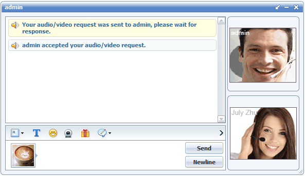
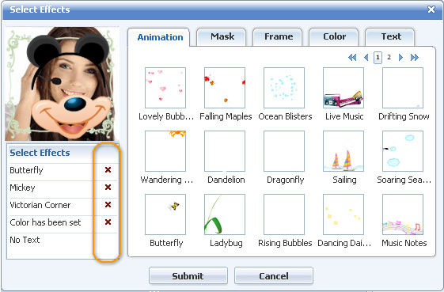
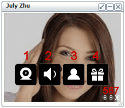

|
Help |
||
|
Video Chat5. Video Chat 1) Publish and View VideoPublish your video:Press the video icon in the right-top menu to publish video of your own. Then all the users in the current room can see a video icon after your name in the user list, and click it to view it then. If you're publishing video for the first time and the "Adobe Flash Player Settings" panel pop up, just click "Allow" to make it work. View other user’s video: click one video icon after any username in the user list and his/her video window will pop up. Block a video viewing request once for all, the user can’t send the request unless you log in again. Private Video Chat: In a private chat session, you can send audio/video request to the other party. If accepted, both of your video windows will pop up. In this case, the video icon after your username will not show to all other users in the current room unless to the other chat party. Which means both of your video content will remain secure and private! While refused, it will block a private video viewing request once for all. So you can’t send a private viewing video request to the user who has blocked you until he/she logs in again. Take popup private chat window as an example. Here is the process of how a private video chat session is established. And there are two video buttons in private chat windows. And the video can be embedded to tabs. Popup and popin modes can be switched easily.  2) Video Window LayoutVideo window layout setting: in Options -> Video Layout, you can set open mode and dock position of video window. Set default dock position: top, bottom, left, right.More tips: 1. Each video window can switch from popup/popin mode separately.2. Multiple video windows, if popup mode, will be separated, while if built-in dock mode, attached together. For example, if one built-in dock mode (at top) is chosen as default setting, then all new video windows will automatically docked to the top and be attached. You may then click its popup icon of one video window to pop it up individually to highlight it. Or later click its popin icon to dock it back. Below are various built-in video docks. Bottom Dock Left Dock Right Dock Top Dock Click the pop-in icon to dock the video windows one by one. Or, click the pop-out icon to do vice versa.
3) Video Special Effects. Special effects may add more fun to your publishing video, or make you more mysterious. FAQ:Check “Effects” button at the bottom of your video, and a panel will popup for you to choose one or more effects. All the animation decorations, photo frames and masks will have a preview (size: 50*50 pixels) at the right side of the effects panel, arranged well in categories. To get a better picture of how well it fits your video, or mix several effects to see the chemical reaction, click any effect you may be interested, and it will overlap on your video at the left side (size: 120*120 pixels) instantly. Remember it’s just a preview, the effects on your video are like in a shopping cart now, and they won’t become yours unless you checking out. So, click “Submit” at the bottom when you’re satisfied eventually. The effects won’t apply for real unless you click “Submit” in the Select Effects panel. In the Select Effects panel, all the effects you’ve chosen to preview will be listed at the left side, click the remove icon after any one to get it deleted.  Five effects can be overlapped. Multiple effects in the same category can’t be added but those crossing categories can be. Double-click the star icon to launch “Select effects” panel to manage effects. Yes it will, for registered members. The masks are fixed, but you may adjust the position of the webcam or your head to make them match as a charm. 4) New Video Window A toolbar is added to the video window to dock all the buttons: Video control, audio control, user interaction, send gift, enlarge or reduce size and full-screen. Meanwhile, video viewer list are added, so does the special effects.  1. Enable/Disable Video (equals to Video On/Off checkbox) 3.User Interaction
4. Send Gift 9. Minimize Video Window
|
|
 |
 |
Help > Chat panel